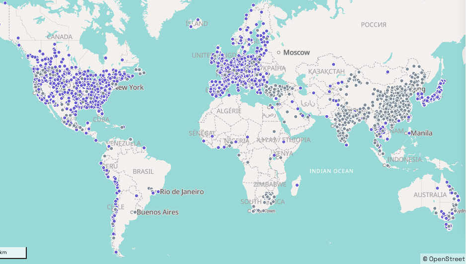
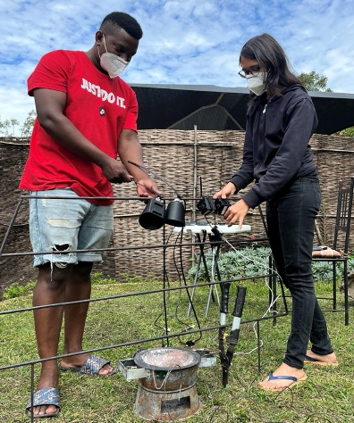

From Smoke to Solution: Advancing Black Carbon as a Regulatory Pollutant
qualitative data
transparency
transcripts
Black carbon in the atmosphere contributes to climate change and is a known carcinogen. Yet, this pollutant remains largely unmonitored and unregulated. Despite its dangers, there are no guidelines on safe levels of black carbon in the air we breathe. It’s time to focus on establishing effective regulations to monitor and control black carbon concentrations in the atmosphere.
What is Black Carbon?
Black carbon is an air pollutant: a component of fine particulate matter that is smaller than 2.5 mm in diameter (PM2.5), it is formed through the incomplete combustion of fossil fuels, biomass, and waste. Essentially, it is a very small particle that forms part of a smoke plume that is either inhaled or dispersed into the atmosphere.
The Case for Regulation
Due to its significant climate and health impacts, as well as its traceability to specific sources, black carbon is increasingly discussed as a potential regulatory pollutant.
Climate Impacts: Black carbon emissions are of concern due to their extremely high global warming potential: up to 5000 times greater than CO2. Black carbon absorbs sunlight and heats the atmosphere, accelerating global warming. When deposited on ice and snow, it reduces their reflectivity, leading to quicker melting.
Health Impacts: These minute particles penetrate deep into the lungs and enter the bloodstream, exacerbating respiratory and cardiovascular diseases and increasing the risk of lung cancer. A specific form of PM2.5, it is more toxic to human health than other types of PM2.5 such as dust.
Source Identification: One reason why black carbon would be easier to regulate than other pollutants is our ability to pinpoint the source. Black carbon from fossil fuels and biomass can be distinguished by their optical properties, allowing for targeted reduction strategies. This capability enhances the effectiveness of emission reduction efforts, enabling evidence-based decisions to address the predominant sources.
Gaps in Global Monitoring: The case of Africa
Despite the significant climate and health impacts of black carbon, global monitoring efforts remain inadequate. While ambient black carbon monitoring is increasing in European countries, the United States, India and China, but Africa lags behind. Only a few countries, such as Ghana, Kenya, and Rwanda.), have some ambient black carbon data, with the high cost of monitors being a major barrier to more extensive data collection.
Even PM2.5, which was declared a regulatory pollutant in 1997 in the U.S., is still inadequately monitored in many African countries. Western Africa has approximately one reference-grade1 PM2.5 monitor per 10 million people, and the situation is even worse in Eastern Africa, with only one reference-grade monitor per 100 million people.). Introducing black carbon as a regulatory pollutant would require substantial investment and infrastructure development to achieve effective monitoring across the continent. Figure 1 illustrates the global distribution of PM2.5 monitoring stations, as documeted by OpenAQ2.

Overcoming Cost Barriers: Innovating Affordable Solutions
Low-cost PM2.5 monitors have expanded access to air quality data. We need similar advancements for black carbon monitoring. Developing hybrid networks that integrate low-cost monitors with reference-grade stations could enhance coverage and accuracy. Currently, what is considered cost-effective often exceeds 3000 USD. During my PhD research in Malawi, I utilized the microAeth® MA200 monitor for personal exposure measurements, which, while less costly than other monitors, was still expensive for the low-income context. Each filter tape, costing approximately 100 USD, lasted only three days due to the high-concentration environment, underscoring the ongoing financial challenges in resource-limited settings.
Research efforts are crucial to developing affordable monitoring technology, particularly in regions like Asia and Africa that contribute 63% of global black carbon emissions. Current monitors, primarily designed for cleaner environments, are inadequate for high-emission areas; even after the initial investment, recurring costs such as filter tapes continue to pose challenges.

Steps Forward
Effective black carbon regulation requires a multifaceted approach that includes technological, regulatory, and educational initiatives.
Develop Affordable Monitors: To make black carbon regulation feasible, affordable and reliable monitoring technology must be developed. Investment in research and the development of low-cost monitors is essential to facilitate widespread adoption.
Establish Clear Guidelines for Monitoring and Reporting: These guidelines should be internationally harmonized to ensure consistency and comparability of data. Additionally, proper limits for ambient concentrations need to be established to provide clear standards for assessing black carbon levels and their impacts.
Raise Awareness and Build Capacity: This includes training and resources for local authorities to implement and maintain monitoring networks.
Policy Integration: Leveraging existing infrastructure and expertise from PM2.5 monitoring could accelerate the implementation of black carbon regulations.
By addressing these key areas, we can enhance our ability to monitor, regulate, and reduce black carbon concentrations, ultimately improving air quality and public health.
Footnotes
A reference-grade air quality monitor is a high-precision, certified instrument used for accurate and reliable measurements of air pollutants, meeting stringent regulatory standards.↩︎
OpenAQ is a nonprofit organization providing universal access to air quality data to empower a global community of changemakers to solve air inequality—the unequal access to clean air.↩︎
Citation
BibTeX citation:
@misc{vijay2024,
author = {Vijay, Saloni},
title = {From {Smoke} to {Solution:} {Advancing} {Black} {Carbon} as a
{Regulatory} {Pollutant}},
date = {2024-07-16},
url = {https://ghe.ethz.ch/ghe-blog-news.html},
doi = {TODO},
langid = {en}
}
For attribution, please cite this work as:
Vijay, Saloni. 2024. “From Smoke to Solution: Advancing Black
Carbon as a Regulatory Pollutant.” From Smoke to Solution:
Advancing Black Carbon as a Regulatory Pollutant. https://doi.org/TODO.